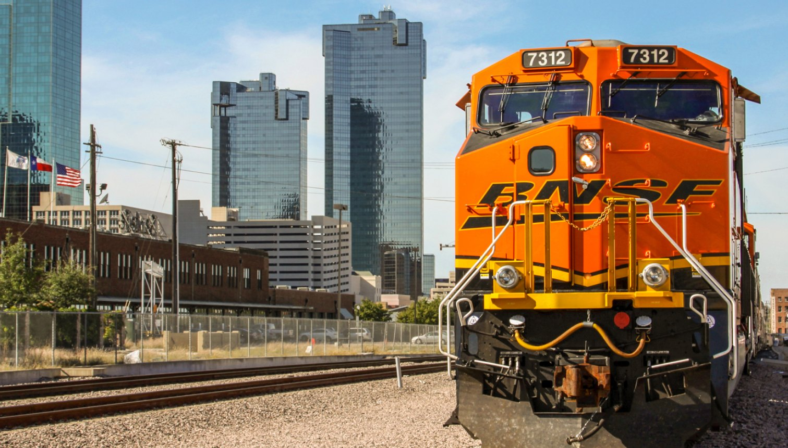

BNSF Railway Site From proof of concept to platform: creating a self-serve BNSF.com that arms content teams with a fresh, modular design system.

I.
BNSF is a tech-enabled logistics partner, but its website still read like a heritage railroad company. Prospective shippers rarely saw rail as an option, and existing customers split freight between railroads based on which was easier to work with. With a focus on converting curious shippers and moving customers from calls to self-serve help, we were brought on for a quick proof of concept which quickly led to building out the full platform and scalable design system.
II.
Movement became our strategic focus. Rather than big, showy animation, we leaned on small, dynamic touches—headlines that advance, content that eases into place, a call to action that travels with you—to communicate progressing forward, both functionally and metaphorically. Each motion does a job, guiding people toward their next step, while quietly reinforcing what BNSF does: keep things moving.
III.
Keeping users progressing forward informed the way we approached several very large operations issues, such as search and self-serve help. Previously methods of information-seeking were informed by the business structure, rather than user needs, and often required insider knowledge to even get started. We overhauled the experience by using smart defaults, natural language queries, and scalable directories that could be both familiar while also customized for unique contexts.
IV.
We created a system of over 60 reusable components that brought velocity to development and content authoring, without sacrificing attention to detail. The MVP site launched in November 2026.